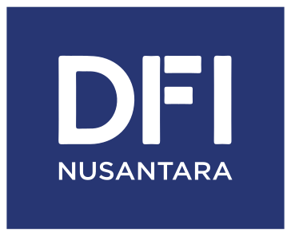
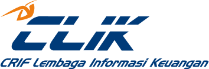

Komunikasi pemasaran terpadu
PR, media sosial, branding, situs web, dan dokumentasi dijalankan sebagai satu rencana. Di JAFF Market, rencana itu menjangkau 8,5 juta tayangan media sosial dan 68 ribu+ pengunjung situs web.
Lihat JAFF MarketMedia relations, komunikasi pemasaran terpadu, dan brand storytelling untuk brand di industri apa pun.

Tentang
Saya seorang pencerita sekaligus ahli strategi. Selama 5+ tahun saya membantu brand mengembangkan suaranya lewat Public Relations dan Marketing Communications.
Saya berfokus menghubungkan brand dengan audiensnya lewat media relations, brand storytelling, dan kampanye terpadu yang membuat orang berhenti, membaca, dan mengingat.
Saat ini saya menangani Netflix Indonesia, Suzuki Indonesia, dan Shell Indonesia. Pengalaman saya mencakup hiburan, teknologi, otomotif, transportasi, manufaktur, ritel, konsumen, dan korporasi, dan saya terbuka untuk industri apa pun.
Komunikasi pemasaran
Di JAFF Market, pasar film pertama di Indonesia, Rizky Wicaksono memimpin komunikasi pemasaran terpadu yang mencakup public relations, media sosial, branding, situs web, dan dokumentasi, bersama 36 anggota tim inti dan 26 relawan.
Rekayasa public relations
Alat pertama segera hadir
Saya tidak bisa coding, dan saya tidak mengklaim demikian. Yang saya miliki adalah rasa ingin tahu dan kemampuan yang cukup untuk memahami cara sesuatu dibangun, belajar lebih jauh, dan mencoba, dengan AI yang mengerjakan bagian beratnya.
Saya sedang menuju peran yang sudah ada di pemasaran tapi belum di PR: public relations engineer. Tujuannya sederhana: memakai AI untuk memangkas bagian PR yang repetitif, seperti pemantauan media, draf pertama, penyusunan daftar media, dan pelaporan, supaya lebih banyak waktu untuk strategi dan hubungan.
Terbuka untuk kolaborasi di bidang PR dan AI, undangan berbicara, dan tim komunikasi yang ingin mengotomatiskan bagian yang membosankan.
PR, media sosial, branding, situs web, dan dokumentasi dijalankan sebagai satu rencana. Di JAFF Market, rencana itu menjangkau 8,5 juta tayangan media sosial dan 68 ribu+ pengunjung situs web.
Lihat JAFF MarketSiaran pers, wawancara, dan kemitraan media. Peluncuran DAIKIN menghasilkan 334+ pemberitaan, dan 663 pemberitaan JAFF Market berasal dari 9 siaran pers dan 13 wawancara.
Lihat DAIKIN IndonesiaPenyegaran brand yang diceritakan lewat brand konsumen yang sudah dikenal orang, seperti Guardian dan IKEA untuk DFI Retail.
Lihat PT DFI Retail Nusantara TbkSuara eksekutif dan pesan untuk pemangku kepentingan bagi perusahaan yang diatur regulasi, seperti wawancara dan opini untuk CLIK.
Lihat PT CRIF Lembaga Informasi Keuangan (CLIK)Konferensi pers dan acara perdana: tiga untuk peluncuran pabrik DAIKIN, dan konser publik pertama sebuah orkestra muda.
Lihat Trinity Entertainment GroupRencana media sosial dan konten tahunan yang membuat topik teknis mudah dibaca, seperti bioteknologi pertanian untuk CropLife.
Lihat CropLife IndonesiaStudi kasus tersedia dalam Bahasa Inggris.
 JAFF MarketBaca studi kasus (EN)
JAFF MarketBaca studi kasus (EN)
 DAIKIN IndonesiaBaca studi kasus (EN)
DAIKIN IndonesiaBaca studi kasus (EN)

PT DFI Retail Nusantara TbkBaca studi kasus (EN) Guardian IndonesiaBaca studi kasus (EN)
Guardian IndonesiaBaca studi kasus (EN)

PT CRIF Lembaga Informasi Keuangan (CLIK)Baca studi kasus (EN) Trinity Entertainment GroupBaca studi kasus (EN)
Trinity Entertainment GroupBaca studi kasus (EN)
 CropLife IndonesiaBaca studi kasus (EN)
Portofolio lengkapBuka di Notion
CropLife IndonesiaBaca studi kasus (EN)
Portofolio lengkapBuka di Notion
Bachelor of Arts di bidang Komunikasi, Universitas Sriwijaya.
Struktur siaran pers yang praktis: judul, paragraf pembuka, kutipan, boilerplate, aset, daftar cek, dan cara menjaga hubungan media tetap bersih.
Cara menulis email pitching yang singkat dan relevan untuk media Indonesia: riset, subjek email, dua kalimat pertama, apa yang ditawarkan, dan cara follow-up.
Metrik PR yang layak dilacak, dari kualitas pemberitaan dan pesan yang tersampaikan hingga hasil bisnis, dan mengapa AMEC meminta industri berhenti memakai AVE.
Apa arti GEO bagi PR. Google menyebut mengoptimalkan fitur AI-nya tetap SEO. Begini artinya dalam praktik, dan di mana PR membantu.
Untuk proyek PR dan kolaborasi, hubungi Rizky Wicaksono lewat LinkedIn atau email.